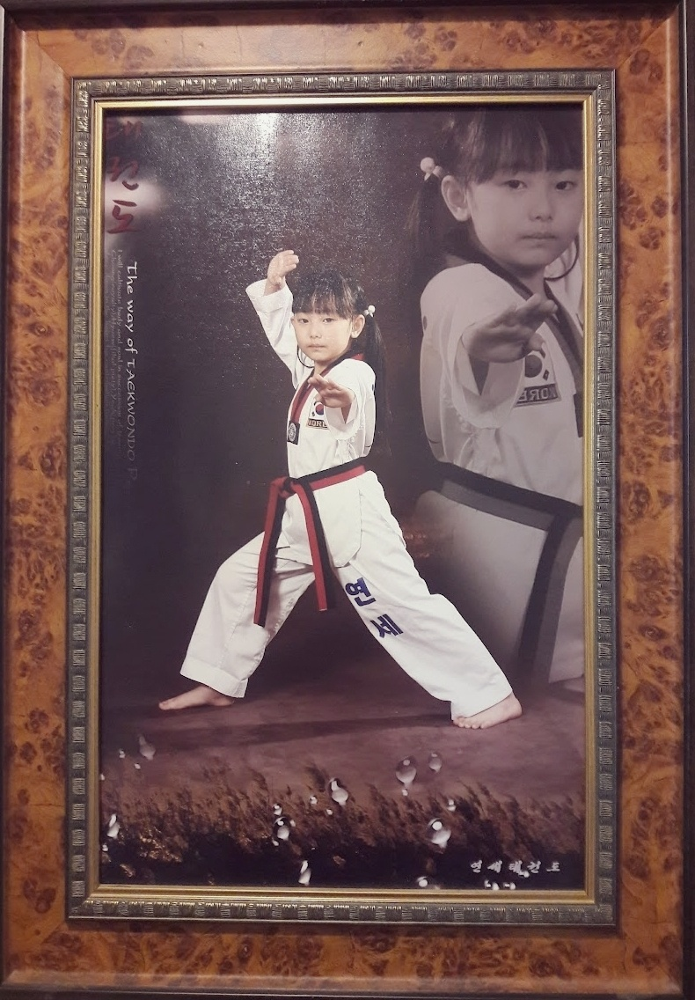
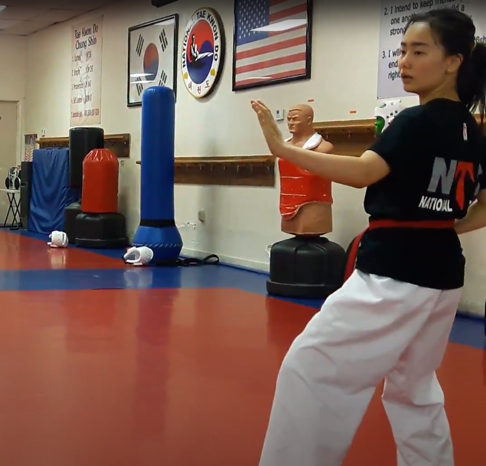
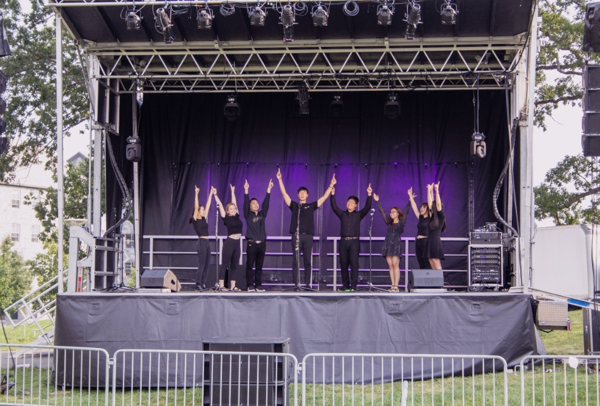
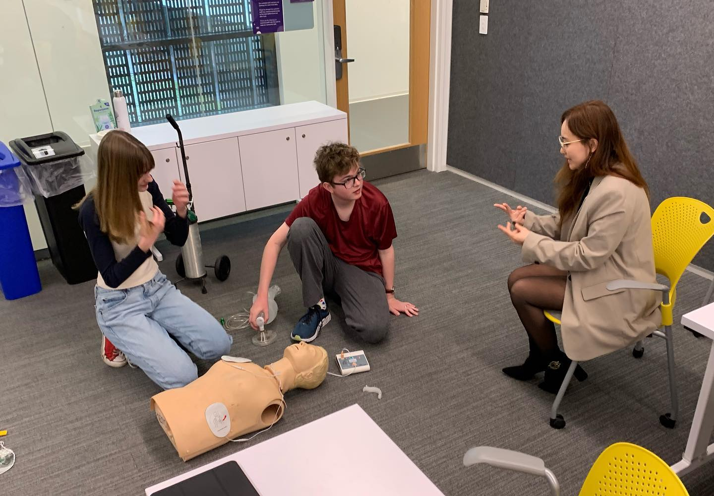
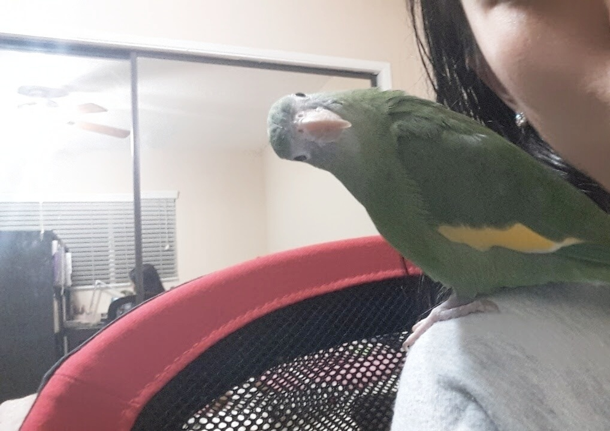

About Me
Overview
Hello, World! Welcome to my About Me page:)
I am a 21-year-old undergraduate studying computer science & the liberal arts at Amherst College.
Biographical Sketch
-
I was born in Seoul, Korea.
I moved around many, many times during my childhood, but I spent the most time in the cities of Changwon and Masan (areas in the southern end of South Korea, where my parents and my family are from), and Bucheon (a city right in between Seoul and Incheon).
-
I lived in Atlanta, Georgia when I was seven, but moved back to Korea after half a year. I still miss the deep green woods, the friendly ducks and the wild deer:) I don't miss the summer mosquitos, though!
-
After living for about 12 years in Korea, I moved to Los Angeles, California. My young self thought that America = = the land of the flora and fauna I was used to seeing in Georgia, so I was quite shocked by the cracked dry asphalt, giant chunks of cacti, and tall palm trees of LA.
-
Then I moved to a city in the Los Angeles county area called Glendale, where I attended John Muir Elementary school from 5th to 6th grade. Here, I furthered my English skills and made a diverse group of friends! Shout out to Izzy, Julie, Daisy, Ana, and Sofia if you're out there somewhere:)
-
Then I moved to South Pasadena, another suburban city in the LA area, in which I spent about 7 years- this was the longest time I've stayed in one place without moving. Many of my childhood (middle school & high school) friends are from this area.
-
I then decided to move to the opposite end of the country- from California to Massachusetts- to attend Amherst College! The first few years in college, I was torn between studying in preparation for medical school, taking as many music classes as my heart desired, and exploring computer science (which I was exposed to in high school- Mr.Shorr, if you're seeing this, you changed my life forever). I ultimately decided to focus on learning computer science, and I'm looking to become a software engineer!
Some Interesting Interests
-
I am a first-degree black belt in TaeKwonDo, a Korean martial art that I've been practicing since I was young. I've puased my training for a few years now, but my favorite practice was weaponry, poomsae (sequences of memorized defense-and-attack techniques), and, wait for it... jump ropes. Yes, jump roping is a serious training method in TaeKwonDo.
-
I sang as a soprano in an A Capella group for 2 years in college! I became a little music'ed out after simultaneously being in 2 choral groups and an A Capella group WHILE taking music classes as well as vocal lessons, so I'm taking a break from for now.
-
I am a certified Massachusetts EMT (Emergency Medical Technician). I taught a nationally-certified EMT course of 30 students and passed on hands-on life-saving skills such as CPR, Medical and Trauma Assessment, Splinting, and more. I currently run one to two 12-hour shifts and respond to emergency calls in the Amherst College campus every week.
-
I love all animals, but birds have a special place in my heart. I had two budgies named Happy and Angel, and a canary-winged parakeet named Cookie:)




